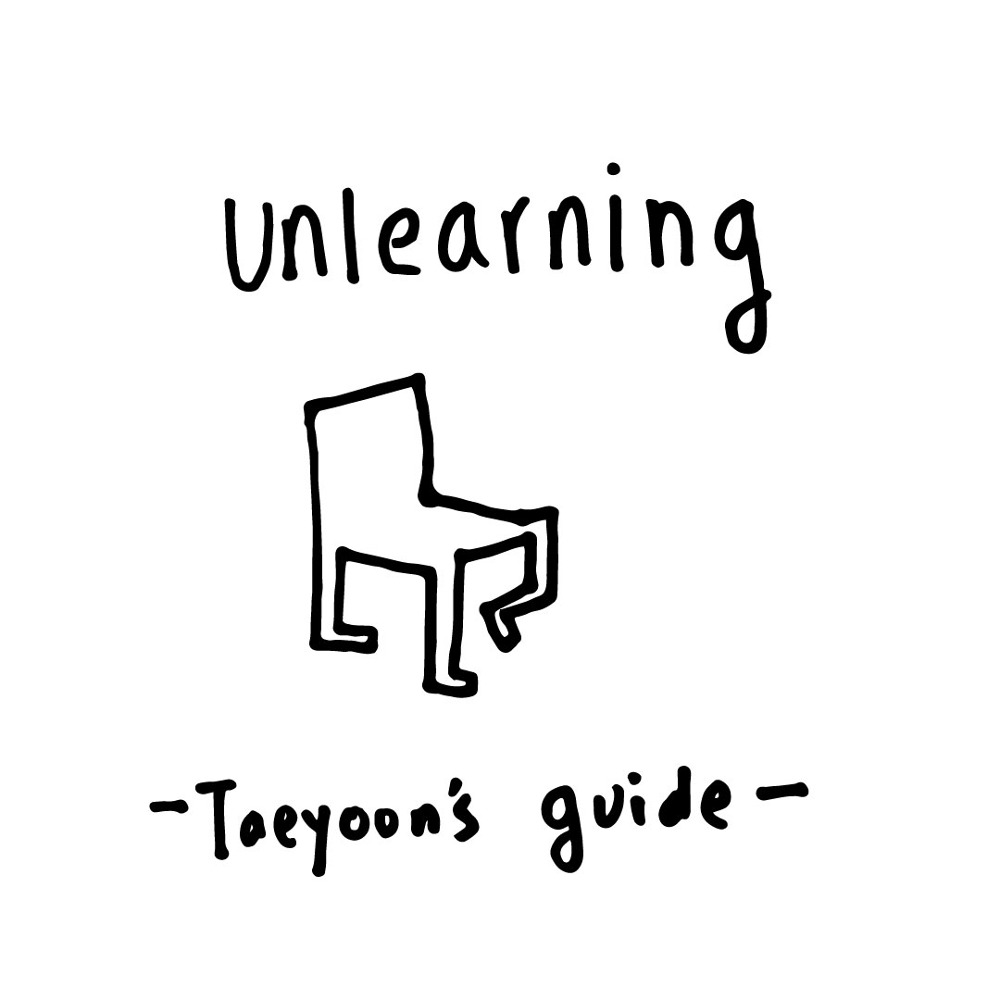

Melanie Hoff asked why we call SFPC participants as students, when they have more agency that traditional schools. I responsed - the participants spend most of their time learning, and the title 'students' give them the freedom experiment and learn from their failure. On that note, I wrote a letter to the incoming students of Code Societies 2020, which I read on the first day of class.
How can we learn to become a life long student? I spent most of the last decade learning to become a teacher. It's been rewarding to have the honor to teach wonderful students in and around institutions. A life long learner is someone who learns in all they do and share their process. Learning is an arduous act of repetition, staying humble and curious. Unlearning is questioning how we learn and what we learn. To learn and unlearn is to live an active life. It is to resist the atrocities of systemic oppression, violence formalized in bureaucracies of knowledge production. Moving forward, I want to focus on learning and unlearning a few topics and their connections.
I will make my own curriculum and find my teachers, build a cohort of co-learners. We will create a community of emancipated thinkers and doers, activators. We will aim to decolonize our minds and our institutions by challenging white supremacy, their complicity in imperialism, violence, and capitalism. We will leverage our institutional affiliations to change the knowledge production from inside out. This process of unlearning must be executed systematically in a coalition with traditional academics, para-academics, non-academics, and local communities. The term unlearning can be traced back to Gayatari Spivak's use of the word in boundary 2, 1993, Judith Butler's Undoing gender, 2004 among others. I'm indepted to my co-learners of the Public School New York, a project that I participated about a decade ago (Molly, Sarah, Kamomi, Maia, Sean, Alex to name a few), Free Cooper Union (Casey and Vic to name a few), and the WYFY School by BUFU, (Tsige, Jaz, Kat, Sonia) a collective that continues to point me towards new forms of learning through movement work and community organizing.
In a self-critical but radically optimistic approach and self-determination, I will take on a journey of research, archive, teaching, publishing, focusing on unlearning as a step towards true freedom, sweet joy of life. Learning to become a student, especially when you are no longer required to be one, is an act of humility and openness. I met wonderfully accomplished people who choose to become students of SFPC because they value internal growth over accreditation or social validation. Their learning was unlearning what they knew, their privileges, stepping into uncomfortable spaces of uncertainty. This discomfort is the key for unlearning.
I often think about joining traditional academia as a student and continue to teach as an adjunct professor at a private university. I have many issues with the ivory towers, corporate-military-industrial-educational complexes. On the other hand, I think it'd be good for me, or anyone, to have a support structure to work with and work against. There are limits to DIY, grassroots institution, one in which you have to build everything from the ground up. It's also difficult to access resources for in-depth research as an outsider. This is a classic struggle, do we abolish and build a new institution? or do we stay within an existing institution and bring gradual change from within? I think it's important to try both. Where we put our energy is our decision. I choose to believe another world is possible, and it's important to utilize the existing infrastructures and create open spaces for alternatives. I learned about the radical resilience and imagination from Janice Gates and Tawanna Patty of the Detroit Community Technology Project when SFPC ran a summer workshop in 2019.
Something I will never get used to in academia is their whiteness. It is a sign of the institutions build on colonial ambitions and exploit. We are standing on a stolen land, we are complicit to the ongoing acts of colonialization. Even the Person of Color scholars adapt and embody whiteness in their language, their imagination, and their manner. How can we unlearn whiteness? Claudia Rankine's wisdom offers a glimpse on how to have a meaningful conversation about whiteness, race and power differences. Whiteness must be understood but avoided. How can we create anti-racist structures of knowledge production, cultural expression? How to build a movement to decolonize our home institutions? our bookshelves? our languages? our imaginations? our titles? our relationship to fellow learners, teachers and ourselves? I continue to learn from my friend Nabil Hassein, who's part of the No New Jail NYC and organizing SFPC Critical Theory Retrospective this Sunday.
Institutions are make-believes that hold real power. Writing as an act of resistance begins with radical honesty, immediacy, urgency, and generosity. To write is to fight the power that enables one to write. Unlearning is learning to live an active life, to resist the atrocities that are normalized in academia, toxic complicity with capitalism. Unlearning to challenge the gatekeepers of information and knowledge. Unlearning is to bring peace and reconciliation to the violence of everyday life. Unlearning is to rethink and rebuild knowledge production. Unlearning is to create our own community of para-academics, dropouts, outcasts of the academia. Unlearning is to theorize and practice more equitable ways of learning and teaching. Unlearning is an uncompromising adventure towards the truth.
I will continue my work as a teacher and administrator at the School for Poetic Computation. I will consider my work and position as a learner, a student, someone who learns from everyone. I will explore institutional partnerships, building solidarity, embedding myself in conventional institutions, creating zines and publications with and for various communities I care about. Neta Bomani's zine practice, American Artists' publishing practice are a few of my inspirations. I hope we learn and unlearn together for next three weeks.
1/6/2020